La empresa creció.
Necesitás ordenar responsabilidades, prioridades y la forma de tomar decisiones.
Dirección empresarial + marketing estratégico · Paraguay
Acompañamos a propietarios, directorios y equipos gerenciales a ordenar su gestión, evaluar nuevas oportunidades y fortalecer sus marcas.
CUÁNDO PODEMOS ACOMPAÑARTE
Partimos del momento de tu empresa
y de lo que necesita resolver.
Necesitás ordenar responsabilidades, prioridades y la forma de tomar decisiones.
Querés analizar un mercado, desarrollar una unidad de negocio o introducir una marca.
Buscás un posicionamiento claro y una comunicación coherente con el negocio.
Necesitás identificar aplicaciones útiles para tu gestión y evaluar por dónde comenzar.
Experiencia aplicada
Una selección para entender cómo conectamos negocio, mercado y creatividad.
El alcance de cada proyecto importa tanto como sus piezas.
Una cartera de marcas y productos a importar dentro de un holding empresarial.
Intervención de KaikakuAnálisis de mercado previo a la importación y trabajo de desarrollo y posicionamiento posterior.
La conexión entre decisiones comerciales, marketing estratégico y desarrollo de marcas.
Estrategia y desarrollo de marcasDesarrollo de identidad de marca, branding y diseño de aplicaciones.
Identidad visual y aplicaciones reunidas en el portfolio de Kaikaku.
Identidad para una empresa de cuidado personal y belleza. Trabajo de branding y aplicaciones de marca.
Piezas de identidad y aplicaciones reunidas en el portfolio.
Entrega creativa documentada; no representa una afirmación de impacto comercial medido.
Sobre Kaikaku
Las decisiones empresariales y la forma de llevarlas al mercado necesitan conversar.
En Kaikaku reunimos dirección empresarial, marketing estratégico y creatividad para acompañar a empresas que están creciendo, profesionalizándose o desarrollando nuevas oportunidades.
Partimos de su contexto: qué necesitan resolver, qué información tienen y qué decisiones deben tomar. Desde ahí acordamos el alcance y conectamos la estrategia con su implementación.
Blas aporta la mirada empresarial. Tania, la dirección creativa. Dos disciplinas que trabajan sobre el mismo desafío.
Cómo planteamos el acompañamiento ↗DOS CAPACIDADES QUE SE COMPLEMENTAN
El alcance se define según
las necesidades de cada empresa.
DIRECCIÓN Y TRANSFORMACIÓN EMPRESARIAL
Acompañamos a propietarios, directorios y equipos gerenciales en decisiones de estrategia y profesionalización.
Diagnóstico, definición de prioridades, plan de acción y seguimiento de decisiones y avances.
MARKETING ESTRATÉGICO Y DESARROLLO DE MARCAS
Integramos análisis de mercado, posicionamiento y creatividad para desarrollar marcas y su presencia comercial.
Definición estratégica de marca, identidad y aplicaciones, contenidos y desarrollo de sus puntos de contacto.
La empresa creció. ¿Su forma de dirigir también?
Responsabilidades, prioridades y decisiones son un punto de partida para conversar sobre profesionalización de empresas familiares.
NUESTRA FILOSOFÍA, LLEVADA AL NEGOCIO
Un punto de partida claro.
Un alcance acordado con tu empresa.
Replantear el modelo, una unidad de negocio o el posicionamiento cuando hace falta una transformación profunda.
Observar, evaluar y ajustar procesos y prácticas para sostener el avance.
Conocer el contexto, las necesidades y la información disponible.
Acordar objetivos, alcance y decisiones que requieren atención.
Desarrollar las acciones y herramientas acordadas con el equipo.
Revisar los avances y ajustar el trabajo según lo aprendido.
IA aplicada a la gestión
Identificar oportunidades, priorizar una aplicación y evaluar un piloto antes de ampliar su uso.
Una ruta propuesta: diagnóstico → priorización → piloto acotado → adopción. El alcance depende del proceso, la información disponible y la capacidad de implementación acordada.
Conversemos sobre el desafío ↗Las personas detrás de Kaikaku
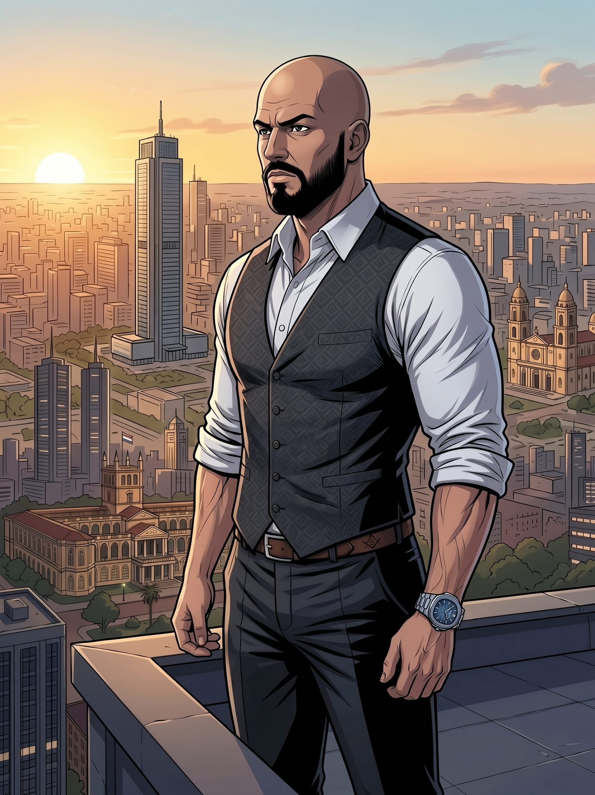
DIRECCIÓN EMPRESARIAL + INTELIGENCIA ARTIFICIALCofundador · Consultor de alta gerencia
Ejecutivo y consultor gerencial con más de 20 años de experiencia en dirección estratégica, empresas familiares, marketing y desarrollo comercial. Su formación internacional integra gestión empresarial, inteligencia artificial, finanzas y negocios digitales. Acompaña decisiones de dirección, profesionalización y desarrollo de negocios.
Experiencia ejecutiva en Grupo Franz, Grupo Yuteña y Tecnocentro, entre otras organizaciones.
Máster en Dirección Comercial y Marketing + Máster en Digital Business
EAE Barcelona · EspañaMBA en Administración y Dirección de Empresas + Máster en IA Empresarial
ENEB / Universidad Isabel I · EspañaGlobal MBA en Dirección Financiera y Tecnología Blockchain
ENEB / Universidad Isabel I · España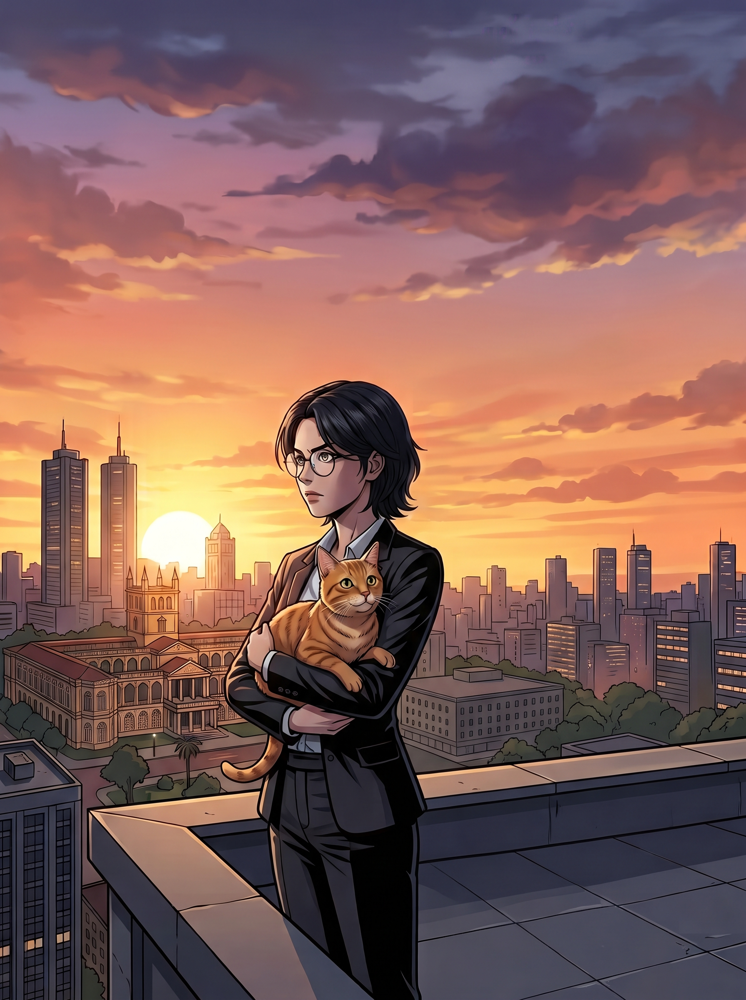
DISEÑO + CONTENIDO + DIRECCIÓN CREATIVACofundadora · Diseñadora gráfica y creadora de contenido
Diseñadora gráfica y creadora de contenido, con más de 10 años de experiencia trabajando en el desarrollo visual y la comunicación de marcas. Su perfil combina diseño, creatividad y estrategia para construir identidades, desarrollar conceptos y crear contenidos que reflejen la esencia de cada marca y conecten con su público.
Una de sus principales fortalezas es transformar información, conceptos y propuestas de valor en mensajes claros, atractivos y fáciles de comprender, adaptándolos al lenguaje y las necesidades de cada audiencia. En Kaikaku, se desempeña en el área de dirección creativa, participando en el desarrollo de estrategias de marca, identidades visuales y propuestas de comunicación para diferentes proyectos.
Cuenta con un Máster en Diseño y Creación de Personajes 2D por Tech Institute, formación que complementa su perfil profesional y fortalece sus conocimientos en ilustración, narrativa visual y desarrollo de personajes.
Blas y Tania fundaron Kaikaku uniendo marketing, diseño e ilustración. Su experiencia fue ampliando el enfoque hacia dirección empresarial, marketing estratégico y desarrollo creativo de marcas.
EXPERIENCIA EN DISTINTOS RUBROS
Relaciones y trabajos que construimos
en distintas etapas desde 2016.
Incluye trabajos para empresas, holdings y marcas de sus carteras, realizados en distintas etapas de nuestra trayectoria.
La trayectoria se construye con cada proyecto. Estas empresas y marcas también son parte de nuestro recorrido.
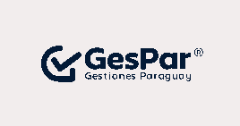
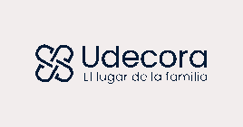
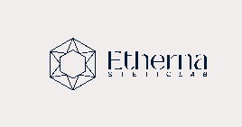
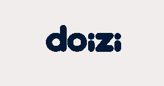
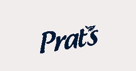
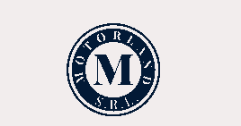
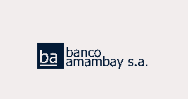
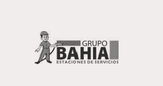
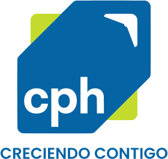
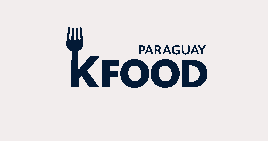
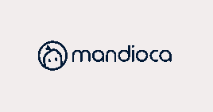
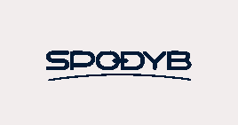
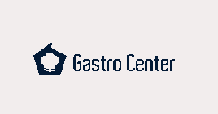
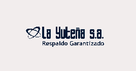
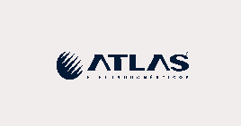
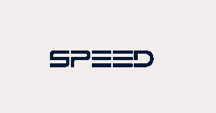
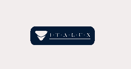
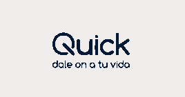
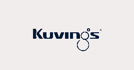
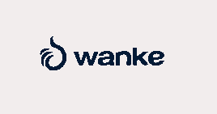
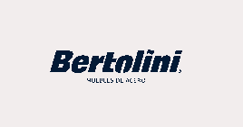
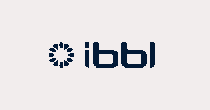
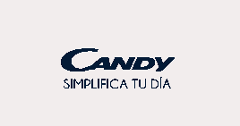
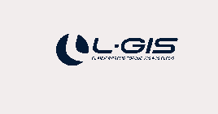
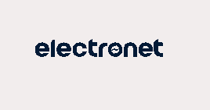
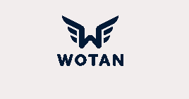
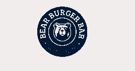
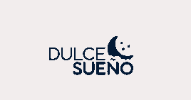
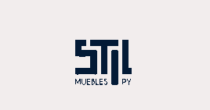
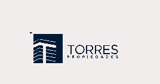
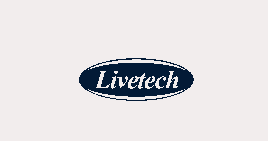
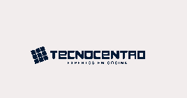
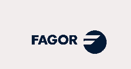
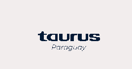
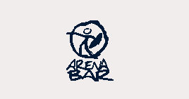
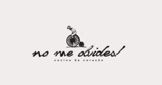
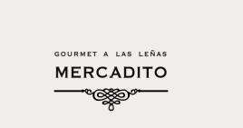
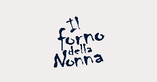
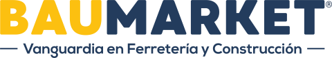
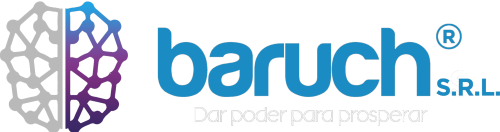
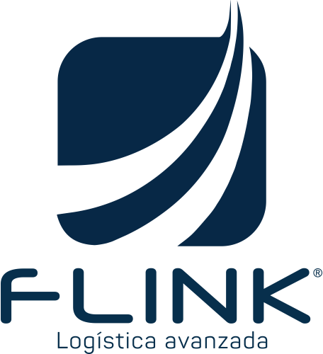
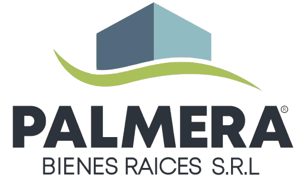
Conversemos sobre tu empresa
Contanos en qué momento está tu empresa y qué necesita resolver.
Conversamos sobre la necesidad y acordamos el alcance de una eventual propuesta.